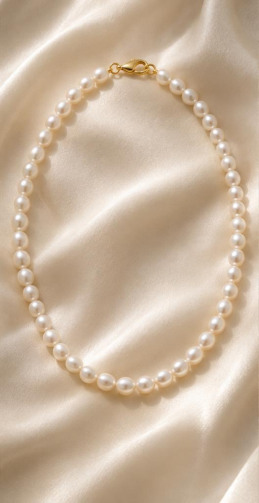

水晶与配件
避免碰撞、拉扯与高温，运动、沐浴或接触清洁剂时先取下。不同矿物与处理方式的耐受性不同，清洁前先确认具体材质说明。

长久相伴。品牌意境视觉">WEAR & CARE
从测量尺寸到日常收纳，让喜爱的作品，陪伴得更从容。
01 / FIND YOUR FIT
此处为一般测量建议，具体尺码以对应商品沟通结果为准。
02 / EVERYDAY CARE
避免碰撞、拉扯与高温，运动、沐浴或接触清洁剂时先取下。不同矿物与处理方式的耐受性不同，清洁前先确认具体材质说明。
避免接触香水、化妆品和清洁剂。佩戴后可用柔软洁净的布轻拭，独立收纳，避免与硬物摩擦。浸泡、超声波清洗等方式应先向店铺确认是否适用。
03 / STORE WITH CARE
使用柔软袋或带分隔的首饰盒，避免不同硬度的饰品直接接触；存放处远离日晒、高温与潮湿。
若串线松弛、扣件异常或配件脱落，先停止佩戴并保留零件，再联系店铺确认可处理范围与费用。
YOUR PERSONAL SELECTION
选一件与自己相契的作品，
也为在意的人，留一份温润的心意。